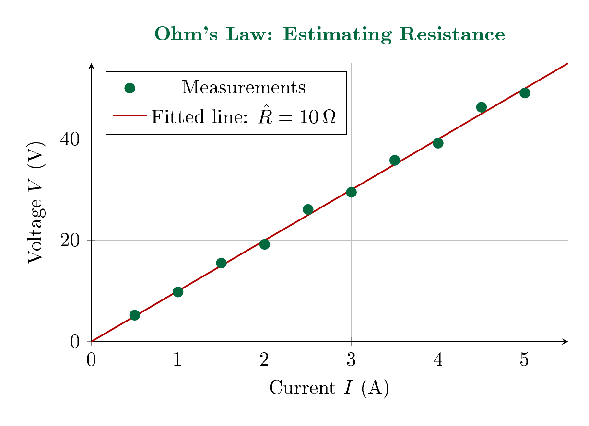
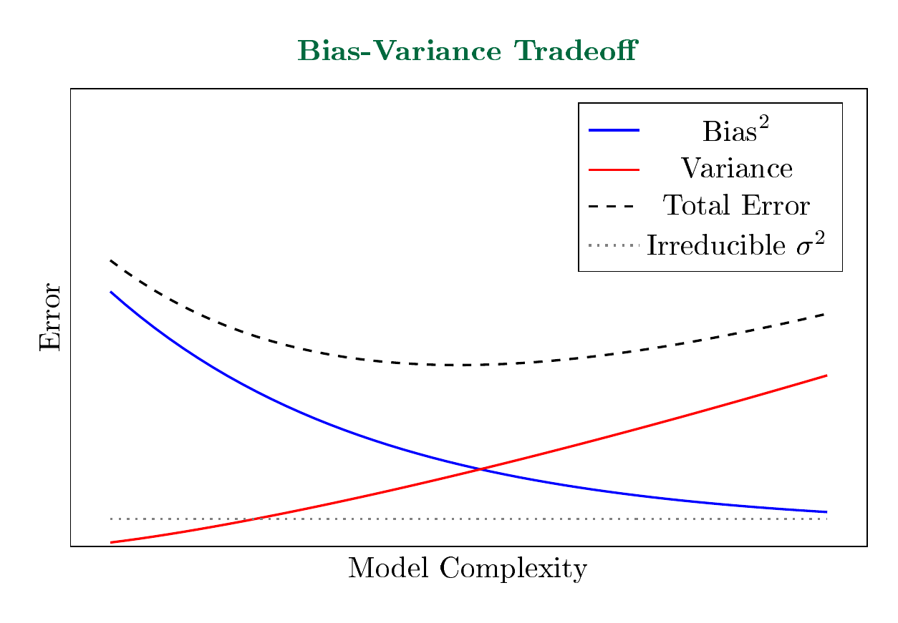
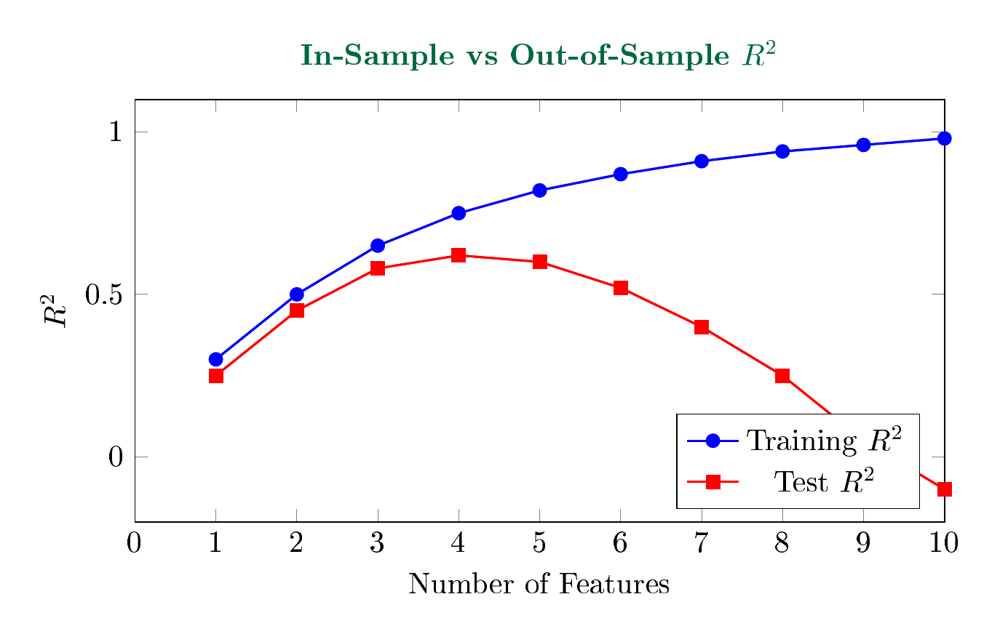

LebNet Tech Fellows — Detailed Notes
Let $y$ be an explained variable and $x$ an explanatory variable related by $y = f(x)$. The linear model assumes $y = a + bx$, where $a, b \in \mathbb{R}$. This relationship does not hold exactly, but may hold up to some noise $\varepsilon$, a term capturing random processes we do not fully understand. We write:
$$Y = a + bX + \varepsilon$$The goal is to find estimators $\hat{a}, \hat{b}$ of the true parameters $a, b$. The case $x \in \mathbb{R}$ is called univariate regression; the case $x \in \mathbb{R}^n$ with $n \geq 2$ is called multivariate regression.
Ohm's Law states that voltage $V$ and current $I$ are related by $V = IR$, where $R$ is the resistance. Given measurements $(I_1, V_1), \ldots, (I_n, V_n)$ from a circuit, we can estimate $R$ by fitting a line through the origin.

Ohm's Law: Estimating Resistance. Measured voltage-current pairs with fitted line $\hat{R} = 10\,\Omega$.
The slope of the fitted line gives the resistance $R$. This is a direct application of linear regression: the current $I$ is the explanatory variable, the voltage $V$ is the explained variable, and the unknown parameter $R$ is what we seek to estimate.
To find estimators $\hat{a}, \hat{b}$, we need a notion of "goodness of fit" — a loss function measuring how far our predictions are from the observed values.
Given a point $(x_i, y_i)$ and a candidate line $\hat{y} = a + bx$, there are several ways to measure the "distance" from the point to the line:
In regression, we use the vertical distance. This is natural: we are trying to predict $y$ from $x$, so the error is how far off our prediction $\hat{y}_i = a + bx_i$ is from the observed $y_i$.
Squaring these vertical distances gives the squared loss:
$$\ell(y, \hat{y}) = (y - \hat{y})^2$$Squared loss has a deeper justification. Under squared loss $\ell(y,z) = (y-z)^2$, the Bayes optimal predictor — the function minimizing expected risk — is the conditional expectation $\mathbb{E}[y|x]$. Intuitively, $\mathbb{E}[y|x=x']$ answers: what do we expect $y$ to be, given we observed $x = x'$?
To show this, let $y$ be the target, $x$ the input, and $z \in \mathbb{R}$ a candidate prediction. The optimal predictor satisfies:
$$\begin{aligned} f_*(x') &\in \underset{z \in \mathbb{R}}{\arg\min} \; \mathbb{E}\left[(y - z)^2 | x = x'\right] \\[8pt] &= \underset{z \in \mathbb{R}}{\arg\min} \left\{ \mathbb{E}\left[(y - \mathbb{E}[y|x=x'])^2 | x = x'\right] + (z - \mathbb{E}[y|x=x'])^2 \right\} \end{aligned}$$The first term is the conditional variance, independent of $z$. The second term is minimized at $z = \mathbb{E}[y|x=x']$. Therefore:
$$f_*(x') = \mathbb{E}[y | x = x']$$The Bayes risk $\mathcal{R}^*$ is the expected conditional variance. To see this, substitute $f_*$ into the risk:
$$\mathcal{R}^* = \mathbb{E}[(y - f_*(x))^2] = \mathbb{E}[(y - \mathbb{E}[y|x])^2] = \mathbb{E}_x\left[\text{Var}(y|x)\right]$$This is the irreducible error: even with the optimal predictor, we cannot do better than the inherent noise in $y$ given $x$.
When we fit a linear model $\hat{y} = a + bx$, we approximate $\mathbb{E}[y|x]$ with the best linear function. If the true conditional expectation is linear in $x$, the model is correctly specified; otherwise, we incur approximation error.
Consider the univariate case. Let $(x_i, y_i) \in \mathcal{X} \times \mathcal{Y}$ be observations sampled from an unknown distribution $\nu$, with training set $D_n = \{(x_i, y_i)\}_{i=1}^{n}$. The goal is to predict $y \in \mathcal{Y}$ given a new input $x \in \mathcal{X}$.
Under squared loss $\ell = (y - \hat{f})^2$, we minimize the empirical risk:
$$\hat{\mathcal{R}}_n(f) = \frac{1}{n} \sum_{i=1}^{n} (y_i - f(x_i))^2$$For the linear model $f(x) = a + bx$, we seek $a, b \in \mathbb{R}$ minimizing $\hat{\mathcal{R}}_n$. We differentiate with respect to each parameter and set to zero.
We compute $\frac{\partial \hat{\mathcal{R}}_n}{\partial a}$:
$$\begin{aligned} \frac{\partial \hat{\mathcal{R}}_n}{\partial a} &= \frac{\partial}{\partial a} \left[ \frac{1}{n} \sum_{i=1}^{n} (y_i - f(x_i))^2 \right] \\[8pt] &= \frac{\partial}{\partial a} \left[ \frac{1}{n} \sum_{i=1}^{n} (y_i - a - bx_i)^2 \right] \\[8pt] &= \frac{1}{n} \sum_{i=1}^{n} \frac{\partial}{\partial a} (y_i - a - bx_i)^2 \\[8pt] &= \frac{1}{n} \sum_{i=1}^{n} 2(y_i - a - bx_i) \cdot \frac{\partial}{\partial a}(y_i - a - bx_i) \\[8pt] &= \frac{1}{n} \sum_{i=1}^{n} 2(y_i - a - bx_i) \cdot (-1) \\[8pt] &= -\frac{2}{n} \sum_{i=1}^{n} (y_i - a - bx_i) \\[8pt] &= \frac{2}{n} \sum_{i=1}^{n} (a + bx_i - y_i) \end{aligned}$$Setting this to zero:
$$\begin{aligned} 0 &= \frac{2}{n} \sum_{i=1}^{n} (a + bx_i - y_i) \\[8pt] 0 &= \sum_{i=1}^{n} (a + bx_i - y_i) \\[8pt] 0 &= \sum_{i=1}^{n} a + \sum_{i=1}^{n} bx_i - \sum_{i=1}^{n} y_i \\[8pt] 0 &= na + b\sum_{i=1}^{n} x_i - \sum_{i=1}^{n} y_i \\[8pt] na &= \sum_{i=1}^{n} y_i - b\sum_{i=1}^{n} x_i \\[8pt] \hat{a} &= \frac{1}{n}\sum_{i=1}^{n} y_i - b \cdot \frac{1}{n}\sum_{i=1}^{n} x_i \\[8pt] \hat{a} &= \bar{y} - b\bar{x} \end{aligned}$$Here $\bar{x} = \frac{1}{n}\sum_{i=1}^{n} x_i$ and $\bar{y} = \frac{1}{n}\sum_{i=1}^{n} y_i$ are the sample means.
$$\boxed{\hat{a} = \bar{y} - \hat{b}\bar{x}}$$We compute $\frac{\partial \hat{\mathcal{R}}_n}{\partial b}$:
$$\begin{aligned} \frac{\partial \hat{\mathcal{R}}_n}{\partial b} &= \frac{\partial}{\partial b} \left[ \frac{1}{n} \sum_{i=1}^{n} (y_i - a - bx_i)^2 \right] \\[8pt] &= \frac{1}{n} \sum_{i=1}^{n} \frac{\partial}{\partial b} (y_i - a - bx_i)^2 \\[8pt] &= \frac{1}{n} \sum_{i=1}^{n} 2(y_i - a - bx_i) \cdot \frac{\partial}{\partial b}(y_i - a - bx_i) \\[8pt] &= \frac{1}{n} \sum_{i=1}^{n} 2(y_i - a - bx_i) \cdot (-x_i) \\[8pt] &= -\frac{2}{n} \sum_{i=1}^{n} x_i(y_i - a - bx_i) \\[8pt] &= \frac{2}{n} \sum_{i=1}^{n} (bx_i^2 - x_iy_i + ax_i) \end{aligned}$$Setting this to zero:
$$\begin{aligned} \frac{2}{n} \sum_{i=1}^{n} (bx_i^2 - x_iy_i + ax_i) &= 0 \\[8pt] \sum_{i=1}^{n} (bx_i^2 - x_iy_i + ax_i) &= 0 \\[8pt] b\sum_{i=1}^{n} x_i^2 - \sum_{i=1}^{n} x_iy_i + a\sum_{i=1}^{n} x_i &= 0 \end{aligned}$$Substituting $\hat{a} = \bar{y} - b\bar{x}$:
$$\begin{aligned} b\sum_{i=1}^{n} x_i^2 - \sum_{i=1}^{n} x_iy_i + (\bar{y} - b\bar{x})\sum_{i=1}^{n} x_i &= 0 \\[8pt] b\sum_{i=1}^{n} x_i^2 - \sum_{i=1}^{n} x_iy_i + \bar{y}\sum_{i=1}^{n} x_i - b\bar{x}\sum_{i=1}^{n} x_i &= 0 \\[8pt] b\sum_{i=1}^{n} x_i^2 - b\bar{x}\sum_{i=1}^{n} x_i &= \sum_{i=1}^{n} x_iy_i - \bar{y}\sum_{i=1}^{n} x_i \\[8pt] b\left[\sum_{i=1}^{n} x_i^2 - \bar{x}\sum_{i=1}^{n} x_i\right] &= \sum_{i=1}^{n} x_iy_i - \bar{y}\sum_{i=1}^{n} x_i \\[8pt] b\left[\sum_{i=1}^{n} x_i^2 - \frac{1}{n}\sum_{i=1}^{n} x_i\sum_{i=1}^{n} x_i\right] &= \sum_{i=1}^{n} x_iy_i - \frac{1}{n}\sum_{i=1}^{n} y_i\sum_{i=1}^{n} x_i \\[8pt] \hat{b} &= \frac{\displaystyle\sum_{i=1}^{n} x_iy_i - \frac{1}{n}\sum_{i=1}^{n} y_i\sum_{i=1}^{n} x_i}{\displaystyle\sum_{i=1}^{n} x_i^2 - \frac{1}{n}\sum_{i=1}^{n} x_i\sum_{i=1}^{n} x_i} \end{aligned}$$Simplifying the numerator (sample covariance):
$$\begin{aligned} &\sum_{i=1}^{n} x_iy_i - \frac{1}{n}\sum_{i=1}^{n} y_i\sum_{i=1}^{n} x_i \\[8pt] &= \sum_{i=1}^{n} x_iy_i - \bar{y}\sum_{i=1}^{n} x_i - \bar{x}\sum_{i=1}^{n} y_i + n\frac{1}{n}\sum_{i=1}^{n} y_i\frac{1}{n}\sum_{i=1}^{n} x_i \\[8pt] &= \sum_{i=1}^{n} x_iy_i - \bar{y}\sum_{i=1}^{n} x_i - \bar{x}\sum_{i=1}^{n} y_i + n\bar{y}\bar{x} \\[8pt] &= \sum_{i=1}^{n} (x_i - \bar{x})(y_i - \bar{y}) \end{aligned}$$Simplifying the denominator (sample variance):
$$\begin{aligned} &\sum_{i=1}^{n} x_i^2 - \frac{1}{n}\sum_{i=1}^{n} x_i\sum_{i=1}^{n} x_i \\[8pt] &= \sum_{i=1}^{n} x_i^2 - 2\frac{1}{n}\sum_{i=1}^{n} x_i\sum_{i=1}^{n} x_i + n\frac{1}{n}\sum_{i=1}^{n} x_i\frac{1}{n}\sum_{i=1}^{n} x_i \\[8pt] &= \sum_{i=1}^{n} x_i^2 - 2\bar{x}\sum_{i=1}^{n} x_i + n\bar{x}^2 \\[8pt] &= \sum_{i=1}^{n} (x_i - \bar{x})(x_i - \bar{x}) \end{aligned}$$ $$\boxed{\hat{b} = \frac{\displaystyle\sum_{i=1}^{n} (x_i - \bar{x})(y_i - \bar{y})}{\displaystyle\sum_{i=1}^{n} (x_i - \bar{x})^2} = \frac{\widehat{\text{Cov}}(X, Y)}{\widehat{\text{Var}}(X)}}$$The first-order conditions impose constraints on the residuals $\varepsilon_i = y_i - \hat{a} - \hat{b}x_i$.
From the first-order condition for $a$:
$$\frac{2}{n}\sum_{i=1}^{n}(a + bx_i - y_i) = 0$$Since $\varepsilon_i = y_i - a - bx_i$:
$$\begin{aligned} \frac{2}{n}\sum_{i=1}^{n}(-\varepsilon_i) &= 0 \\[8pt] \sum_{i=1}^{n}\varepsilon_i &= 0 \\[8pt] \bar{\varepsilon} &= 0 \end{aligned}$$ $$\boxed{\mathbb{E}[\varepsilon] = 0}$$By definition:
$$\text{Cov}(X, \varepsilon) = \mathbb{E}[(X - \mu_X)(\varepsilon - \mu_\varepsilon)] = \mathbb{E}[X\varepsilon] - \mathbb{E}[X]\mathbb{E}[\varepsilon]$$Since $\mathbb{E}[\varepsilon] = 0$, this reduces to $\text{Cov}(X, \varepsilon) = \mathbb{E}[X\varepsilon]$.
Substituting $\varepsilon = Y - a - bX$:
$$\mathbb{E}[X\varepsilon] = \mathbb{E}[X(Y - a - bX)] = \mathbb{E}[XY] - a\mathbb{E}[X] - b\mathbb{E}[X^2]$$From the first-order condition for $b$:
$$-\frac{2}{n}\sum_{i=1}^{n}x_i(y_i - a - bx_i) = 0 \implies \sum_{i=1}^{n} x_i(y_i - a - bx_i) = 0$$Dividing by $n$:
$$\frac{1}{n}\sum_{i=1}^{n} x_iy_i - a\frac{1}{n}\sum_{i=1}^{n}x_i - b\frac{1}{n}\sum_{i=1}^{n}x_i^2 = 0$$This is the sample analogue of $\mathbb{E}[XY] - a\mathbb{E}[X] - b\mathbb{E}[X^2] = 0$. Therefore:
$$\text{Cov}(X, \varepsilon) = \mathbb{E}[X\varepsilon] = \mathbb{E}[XY] - a\mathbb{E}[X] - b\mathbb{E}[X^2] = 0$$ $$\boxed{\text{Cov}(X, \varepsilon) = 0}$$For the linear model $Y = a + bX + \varepsilon$ with OLS estimators:
These are not assumptions but consequences of the first-order conditions.
Let us now consider the matrix notation, which is helpful to generalize our model for higher dimensions. For each observation $i = 1, \ldots, n$, let $\mathbf{x}_i \in \mathbb{R}^d$ be the vector of explanatory variables and $y_i \in \mathbb{R}$ the dependent variable. The model is:
$$y_i = \mathbf{x}_i^\top \boldsymbol{\theta} + \varepsilon_i$$where $\boldsymbol{\theta} \in \mathbb{R}^d$ is the parameter vector and $\{\varepsilon_i\}_{i=1,\ldots,n}$ are noise terms satisfying $\text{cov}(\mathbf{x}_i, \varepsilon_i) = \mathbf{0}$.
To include an intercept, we assume the first coordinate of $\mathbf{x}_i$ is 1:
$$\mathbf{x}_i = \begin{bmatrix} 1 \\ x_{i1} \\ \vdots \\ x_{i,d-1} \end{bmatrix}, \quad \boldsymbol{\theta} = \begin{bmatrix} a \\ b_1 \\ \vdots \\ b_{d-1} \end{bmatrix}$$so that $\mathbf{x}_i^\top \boldsymbol{\theta} = a + b_1 x_{i1} + \cdots + b_{d-1} x_{i,d-1}$, where $\theta_1 = a$ is the intercept.
Let $\mathbf{y} = (y_1, \ldots, y_n)^\top \in \mathbb{R}^n$ be the vector of responses and $\mathbf{X} \in \mathbb{R}^{n \times d}$ the matrix whose $i$-th row is $\mathbf{x}_i^\top$:
$$\mathbf{y} = \begin{bmatrix} y_1 \\ y_2 \\ \vdots \\ y_n \end{bmatrix}, \quad \mathbf{X} = \begin{bmatrix} 1 & x_{11} & \cdots & x_{1,d-1} \\ 1 & x_{21} & \cdots & x_{2,d-1} \\ \vdots & \vdots & \ddots & \vdots \\ 1 & x_{n1} & \cdots & x_{n,d-1} \end{bmatrix}$$The matrix $\mathbf{X}$ is called the design matrix. The model can be written compactly as:
$$\mathbf{y} = \mathbf{X}\boldsymbol{\theta} + \boldsymbol{\varepsilon}$$The goal is to find an estimator $\hat{\boldsymbol{\theta}}$ of the true parameter $\boldsymbol{\theta}$. The empirical risk is:
$$\hat{\mathcal{R}}_n(\boldsymbol{\theta}) = \frac{1}{n}\|\mathbf{y} - \mathbf{X}\boldsymbol{\theta}\|_2^2$$We expand the squared norm:
$$\begin{aligned} \hat{\mathcal{R}}_n(\boldsymbol{\theta}) &= \frac{1}{n}(\mathbf{y} - \mathbf{X}\boldsymbol{\theta})^\top(\mathbf{y} - \mathbf{X}\boldsymbol{\theta}) \\[8pt] &= \frac{1}{n}\left(\mathbf{y}^\top\mathbf{y} - \mathbf{y}^\top\mathbf{X}\boldsymbol{\theta} - \boldsymbol{\theta}^\top\mathbf{X}^\top\mathbf{y} + \boldsymbol{\theta}^\top\mathbf{X}^\top\mathbf{X}\boldsymbol{\theta}\right) \\[8pt] &= \frac{1}{n}\left(\boldsymbol{\theta}^\top\mathbf{X}^\top\mathbf{X}\boldsymbol{\theta} - 2\boldsymbol{\theta}^\top\mathbf{X}^\top\mathbf{y} + \|\mathbf{y}\|^2\right) \end{aligned}$$The last line follows because $\mathbf{y}^\top\mathbf{X}\boldsymbol{\theta} = \boldsymbol{\theta}^\top\mathbf{X}^\top\mathbf{y}$, as the transpose of a scalar is itself.
Since $\hat{\mathcal{R}}_n$ is differentiable, any minimizer must satisfy $\nabla\hat{\mathcal{R}}_n(\hat{\boldsymbol{\theta}}) = \mathbf{0}$. We compute the gradient using standard matrix calculus identities: for symmetric $\mathbf{A}$, we have $\nabla_{\boldsymbol{\theta}}(\boldsymbol{\theta}^\top \mathbf{A} \boldsymbol{\theta}) = 2\mathbf{A}\boldsymbol{\theta}$ and $\nabla_{\boldsymbol{\theta}}(\boldsymbol{\theta}^\top \mathbf{b}) = \mathbf{b}$. Since $\mathbf{X}^\top\mathbf{X} \in \mathbb{R}^{d \times d}$ is symmetric:
$$\begin{aligned} \nabla\hat{\mathcal{R}}_n(\boldsymbol{\theta}) &= \frac{1}{n}\left(2\mathbf{X}^\top\mathbf{X}\boldsymbol{\theta} - 2\mathbf{X}^\top\mathbf{y}\right) \\[8pt] &= \frac{2}{n}\left(\mathbf{X}^\top\mathbf{X}\boldsymbol{\theta} - \mathbf{X}^\top\mathbf{y}\right) \end{aligned}$$Setting the gradient to zero yields the normal equations:
$$\mathbf{X}^\top\mathbf{X}\hat{\boldsymbol{\theta}} = \mathbf{X}^\top\mathbf{y}$$If $\mathbf{X}^\top\mathbf{X}$ is invertible, we can multiply both sides by $(\mathbf{X}^\top\mathbf{X})^{-1}$:
$$\boxed{\hat{\boldsymbol{\theta}} = (\mathbf{X}^\top\mathbf{X})^{-1}\mathbf{X}^\top\mathbf{y}}$$The rank condition. The inverse $(\mathbf{X}^\top\mathbf{X})^{-1}$ exists iff $\text{rank}(\mathbf{X}) = d$. Without full column rank, infinitely many $\boldsymbol{\theta}$ satisfy the normal equations. Since $\text{rank}(\mathbf{X}) \leq \min(n, d)$, we need $n \geq d$. The case $\text{rank}(\mathbf{X}) < d$ is called perfect multicollinearity.
Verifying the minimum. The Hessian is $\nabla^2\hat{\mathcal{R}}_n(\boldsymbol{\theta}) = \frac{2}{n}\mathbf{X}^\top\mathbf{X}$. For any $\mathbf{v} \neq \mathbf{0}$:
$$\mathbf{v}^\top(\mathbf{X}^\top\mathbf{X})\mathbf{v} = \|\mathbf{X}\mathbf{v}\|^2 > 0$$The strict inequality holds because full column rank implies $\mathbf{X}\mathbf{v} \neq \mathbf{0}$ for $\mathbf{v} \neq \mathbf{0}$. The Hessian is positive definite, so $\hat{\mathcal{R}}_n$ is strictly convex and $\hat{\boldsymbol{\theta}}$ is the unique global minimum.
The residual vector $\mathbf{y} - \hat{\mathbf{y}} \in \mathbb{R}^n$ has coordinates:
$$\mathbf{y} - \hat{\mathbf{y}} = \begin{bmatrix} y_1 - \hat{y}_1 \\ y_2 - \hat{y}_2 \\ \vdots \\ y_n - \hat{y}_n \end{bmatrix}$$Each entry is one vertical residual. The squared Euclidean norm of this vector is:
$$\|\mathbf{y} - \hat{\mathbf{y}}\|_2^2 = (y_1 - \hat{y}_1)^2 + (y_2 - \hat{y}_2)^2 + \cdots + (y_n - \hat{y}_n)^2 = \sum_{i=1}^{n}(y_i - \hat{y}_i)^2$$So minimizing the Euclidean distance in $\mathbb{R}^n$ between $\mathbf{y}$ and $\hat{\mathbf{y}}$ is exactly minimizing the sum of squared vertical distances.
The vector $\mathbf{y} \in \mathbb{R}^n$ generally does not lie in $\text{Im}(\mathbf{X}) = \{\mathbf{X}\boldsymbol{\theta} : \boldsymbol{\theta} \in \mathbb{R}^d\}$, the $d$-dimensional subspace spanned by the columns of $\mathbf{X}$. The closest point in this subspace is the orthogonal projection of $\mathbf{y}$ onto $\text{Im}(\mathbf{X})$:
$$\hat{\mathbf{y}} = \mathbf{X}\hat{\boldsymbol{\theta}} = \mathbf{X}(\mathbf{X}^\top\mathbf{X})^{-1}\mathbf{X}^\top\mathbf{y} = \mathbf{P}_{\mathbf{X}}\mathbf{y}$$The matrix $\mathbf{P}_{\mathbf{X}} := \mathbf{X}(\mathbf{X}^\top\mathbf{X})^{-1}\mathbf{X}^\top$ is the projection matrix onto $\text{Im}(\mathbf{X})$. The residual vector $\hat{\boldsymbol{\varepsilon}} = \mathbf{y} - \hat{\mathbf{y}}$ is orthogonal to every column of $\mathbf{X}$, which is the content of the normal equations: $\mathbf{X}^\top(\mathbf{y} - \mathbf{X}\hat{\boldsymbol{\theta}}) = \mathbf{0}$.
The closed-form $\hat{\boldsymbol{\theta}} = (\mathbf{X}^\top\mathbf{X})^{-1}\mathbf{X}^\top\mathbf{y}$ requires $O(nd^2)$ to form $\mathbf{X}^\top\mathbf{X}$ and $O(d^3)$ to invert it. When $d$ is large, this becomes infeasible.
Gradient descent bypasses matrix inversion by iterating. Recall the gradient:
$$\nabla\hat{\mathcal{R}}_n(\boldsymbol{\theta}) = \frac{2}{n}\left(\mathbf{X}^\top\mathbf{X}\boldsymbol{\theta} - \mathbf{X}^\top\mathbf{y}\right)$$Starting from $\hat{\boldsymbol{\theta}}_0 = \mathbf{0}$, we update:
$$\hat{\boldsymbol{\theta}}_{t+1} = \hat{\boldsymbol{\theta}}_t - \eta \nabla\hat{\mathcal{R}}_n(\hat{\boldsymbol{\theta}}_t) = \hat{\boldsymbol{\theta}}_t - \frac{2\eta}{n}\left(\mathbf{X}^\top\mathbf{X}\hat{\boldsymbol{\theta}}_t - \mathbf{X}^\top\mathbf{y}\right)$$At convergence, $\hat{\boldsymbol{\theta}}_{t+1} = \hat{\boldsymbol{\theta}}_t$, which requires $\mathbf{X}^\top\mathbf{X}\hat{\boldsymbol{\theta}} = \mathbf{X}^\top\mathbf{y}$ — the normal equations. So gradient descent converges to the OLS solution.
When $n$ is large, computing the full gradient requires summing over all observations:
$$\nabla\hat{\mathcal{R}}_n(\boldsymbol{\theta}) = \frac{2}{n}\sum_{i=1}^{n}\mathbf{x}_i(\mathbf{x}_i^\top\boldsymbol{\theta} - y_i)$$Stochastic gradient descent (SGD) approximates this using a single observation:
$$\nabla_i(\boldsymbol{\theta}) = 2\mathbf{x}_i(\mathbf{x}_i^\top\boldsymbol{\theta} - y_i)$$This is an unbiased estimate: $\mathbb{E}_i[\nabla_i(\boldsymbol{\theta})] = \nabla\hat{\mathcal{R}}_n(\boldsymbol{\theta})$. The SGD update is:
$$\hat{\boldsymbol{\theta}}_{t+1} = \hat{\boldsymbol{\theta}}_t - \eta_t \mathbf{x}_i(\mathbf{x}_i^\top\hat{\boldsymbol{\theta}}_t - y_i)$$With a decaying learning rate $\eta_t \to 0$ (such that $\sum_t \eta_t = \infty$ and $\sum_t \eta_t^2 < \infty$), SGD converges to the OLS solution. Mini-batch gradient descent averages over a subset of $B$ observations, reducing variance while remaining tractable.
So far, we have treated regression purely as an optimization problem. To make statistical statements about $\hat{\boldsymbol{\theta}}$ — its distribution, confidence intervals, hypothesis tests — we need assumptions about the data-generating process.
The fixed-X or classical linear model assumes:
Assumption (3) implies $\E[\varepsilon_i] = 0$ and $\Cov(\mathbf{x}_i, \varepsilon_i) = \mathbf{0}$. Assumption (4) says errors have constant variance $\sigma^2$ and are uncorrelated with each other.
For inference (confidence intervals, $t$-tests), we add:
Under (1)–(5) alone, we get unbiasedness and BLUE. Adding (6) gives exact finite-sample distributions.
Under assumptions (1)–(3), the OLS estimator is unbiased: $\E[\hat{\boldsymbol{\theta}}] = \boldsymbol{\theta}$.
Substitute the true model $\mathbf{y} = \mathbf{X}\boldsymbol{\theta} + \boldsymbol{\varepsilon}$ into the OLS formula:
$$\begin{aligned} \hat{\boldsymbol{\theta}} &= (\mathbf{X}^\top\mathbf{X})^{-1}\mathbf{X}^\top\mathbf{y} \\ &= (\mathbf{X}^\top\mathbf{X})^{-1}\mathbf{X}^\top(\mathbf{X}\boldsymbol{\theta} + \boldsymbol{\varepsilon}) \\ &= (\mathbf{X}^\top\mathbf{X})^{-1}\mathbf{X}^\top\mathbf{X}\boldsymbol{\theta} + (\mathbf{X}^\top\mathbf{X})^{-1}\mathbf{X}^\top\boldsymbol{\varepsilon} \\ &= \boldsymbol{\theta} + (\mathbf{X}^\top\mathbf{X})^{-1}\mathbf{X}^\top\boldsymbol{\varepsilon} \end{aligned}$$Taking expectations (with $\mathbf{X}$ fixed):
$$\E[\hat{\boldsymbol{\theta}}] = \boldsymbol{\theta} + (\mathbf{X}^\top\mathbf{X})^{-1}\mathbf{X}^\top\E[\boldsymbol{\varepsilon}] = \boldsymbol{\theta} + \mathbf{0} = \boldsymbol{\theta}$$∎
Under assumptions (1)–(4):
$$\Var(\hat{\boldsymbol{\theta}}) = \sigma^2 (\mathbf{X}^\top\mathbf{X})^{-1}$$From $\hat{\boldsymbol{\theta}} = \boldsymbol{\theta} + (\mathbf{X}^\top\mathbf{X})^{-1}\mathbf{X}^\top\boldsymbol{\varepsilon}$:
$$\begin{aligned} \Var(\hat{\boldsymbol{\theta}}) &= \Var\left((\mathbf{X}^\top\mathbf{X})^{-1}\mathbf{X}^\top\boldsymbol{\varepsilon}\right) \\ &= (\mathbf{X}^\top\mathbf{X})^{-1}\mathbf{X}^\top \Var(\boldsymbol{\varepsilon}) \mathbf{X}(\mathbf{X}^\top\mathbf{X})^{-1} \\ &= (\mathbf{X}^\top\mathbf{X})^{-1}\mathbf{X}^\top (\sigma^2 \mathbf{I}_n) \mathbf{X}(\mathbf{X}^\top\mathbf{X})^{-1} \\ &= \sigma^2 (\mathbf{X}^\top\mathbf{X})^{-1}\mathbf{X}^\top\mathbf{X}(\mathbf{X}^\top\mathbf{X})^{-1} \\ &= \sigma^2 (\mathbf{X}^\top\mathbf{X})^{-1} \end{aligned}$$∎
The variance of the $j$-th coefficient is $\Var(\hat{\theta}_j) = \sigma^2 [(\mathbf{X}^\top\mathbf{X})^{-1}]_{jj}$.
The Gauss-Markov theorem establishes OLS as the best among a restricted class of estimators.
An estimator $\tilde{\boldsymbol{\theta}}$ is linear in $\mathbf{y}$ if $\tilde{\boldsymbol{\theta}} = \mathbf{A}\mathbf{y}$ for some matrix $\mathbf{A} \in \mathbb{R}^{d \times n}$ that depends only on $\mathbf{X}$.
OLS is linear: $\hat{\boldsymbol{\theta}} = (\mathbf{X}^\top\mathbf{X})^{-1}\mathbf{X}^\top\mathbf{y} = \mathbf{A}_{\text{OLS}}\mathbf{y}$ with $\mathbf{A}_{\text{OLS}} = (\mathbf{X}^\top\mathbf{X})^{-1}\mathbf{X}^\top$.
Under assumptions (1)–(5), the OLS estimator is BLUE: Best Linear Unbiased Estimator. That is, for any linear unbiased estimator $\tilde{\boldsymbol{\theta}} = \mathbf{A}\mathbf{y}$:
$$\Var(\tilde{\theta}_j) \geq \Var(\hat{\theta}_j) \quad \text{for all } j = 1, \ldots, d$$Equivalently, $\Var(\tilde{\boldsymbol{\theta}}) - \Var(\hat{\boldsymbol{\theta}})$ is positive semi-definite.
Let $\tilde{\boldsymbol{\theta}} = \mathbf{A}\mathbf{y}$ be any linear unbiased estimator. Write $\mathbf{A} = \mathbf{A}_{\text{OLS}} + \mathbf{D}$ where $\mathbf{D} = \mathbf{A} - \mathbf{A}_{\text{OLS}}$.
Step 1: Unbiasedness constraint. For $\tilde{\boldsymbol{\theta}}$ to be unbiased:
$$\begin{aligned} \E[\tilde{\boldsymbol{\theta}}] &= \E[\mathbf{A}(\mathbf{X}\boldsymbol{\theta} + \boldsymbol{\varepsilon})] = \mathbf{A}\mathbf{X}\boldsymbol{\theta} = \boldsymbol{\theta} \quad \forall \boldsymbol{\theta} \end{aligned}$$This requires $\mathbf{A}\mathbf{X} = \mathbf{I}_d$. Since $\mathbf{A}_{\text{OLS}}\mathbf{X} = (\mathbf{X}^\top\mathbf{X})^{-1}\mathbf{X}^\top\mathbf{X} = \mathbf{I}_d$, we need:
$$\mathbf{D}\mathbf{X} = (\mathbf{A} - \mathbf{A}_{\text{OLS}})\mathbf{X} = \mathbf{I}_d - \mathbf{I}_d = \mathbf{0}$$Step 2: Variance of $\tilde{\boldsymbol{\theta}}$.
$$\begin{aligned} \Var(\tilde{\boldsymbol{\theta}}) &= \Var(\mathbf{A}\boldsymbol{\varepsilon}) = \sigma^2 \mathbf{A}\mathbf{A}^\top \\ &= \sigma^2 (\mathbf{A}_{\text{OLS}} + \mathbf{D})(\mathbf{A}_{\text{OLS}} + \mathbf{D})^\top \\ &= \sigma^2 \left(\mathbf{A}_{\text{OLS}}\mathbf{A}_{\text{OLS}}^\top + \mathbf{A}_{\text{OLS}}\mathbf{D}^\top + \mathbf{D}\mathbf{A}_{\text{OLS}}^\top + \mathbf{D}\mathbf{D}^\top\right) \end{aligned}$$Step 3: Cross terms vanish. Note that $\mathbf{A}_{\text{OLS}}^\top = \mathbf{X}(\mathbf{X}^\top\mathbf{X})^{-1}$. Since $\mathbf{D}\mathbf{X} = \mathbf{0}$:
$$\mathbf{D}\mathbf{A}_{\text{OLS}}^\top = \mathbf{D}\mathbf{X}(\mathbf{X}^\top\mathbf{X})^{-1} = \mathbf{0}$$Similarly, $\mathbf{A}_{\text{OLS}}\mathbf{D}^\top = (\mathbf{D}\mathbf{A}_{\text{OLS}}^\top)^\top = \mathbf{0}$.
Step 4: Conclusion.
$$\begin{aligned} \Var(\tilde{\boldsymbol{\theta}}) &= \sigma^2 \mathbf{A}_{\text{OLS}}\mathbf{A}_{\text{OLS}}^\top + \sigma^2 \mathbf{D}\mathbf{D}^\top \\ &= \Var(\hat{\boldsymbol{\theta}}) + \sigma^2 \mathbf{D}\mathbf{D}^\top \end{aligned}$$Since $\mathbf{D}\mathbf{D}^\top$ is positive semi-definite, $\Var(\tilde{\boldsymbol{\theta}}) \geq \Var(\hat{\boldsymbol{\theta}})$.
∎
BLUE means best among linear unbiased estimators. Nonlinear or biased estimators may have lower MSE (see Part III on regularization).
Under normality (assumption 6), we can strengthen Gauss-Markov.
Under assumptions (1)–(6), OLS is BUE: Best Unbiased Estimator (not just linear). It achieves the Cramér-Rao lower bound.
The Cramér-Rao bound states that for any unbiased estimator $\tilde{\boldsymbol{\theta}}$:
$$\Var(\tilde{\boldsymbol{\theta}}) \geq \mathcal{I}(\boldsymbol{\theta})^{-1}$$where $\mathcal{I}(\boldsymbol{\theta})$ is the Fisher information matrix. Under the normal linear model, $\mathcal{I}(\boldsymbol{\theta}) = \frac{1}{\sigma^2}\mathbf{X}^\top\mathbf{X}$, so the bound is $\sigma^2(\mathbf{X}^\top\mathbf{X})^{-1}$ — exactly the variance of OLS.
The error variance $\sigma^2$ is unknown and must be estimated. A natural estimator uses the residuals:
$$\hat{\sigma}^2 = \frac{1}{n-d}\sum_{i=1}^{n}\hat{\varepsilon}_i^2 = \frac{\|\mathbf{y} - \mathbf{X}\hat{\boldsymbol{\theta}}\|^2}{n-d} = \frac{\text{RSS}}{n-d}$$where RSS = Residual Sum of Squares.
Under assumptions (1)–(5), $\hat{\sigma}^2$ is unbiased: $\E[\hat{\sigma}^2] = \sigma^2$.
The residual vector is $\hat{\boldsymbol{\varepsilon}} = \mathbf{y} - \mathbf{X}\hat{\boldsymbol{\theta}} = (\mathbf{I} - \mathbf{P}_{\mathbf{X}})\mathbf{y} = \mathbf{M}\boldsymbol{\varepsilon}$, where $\mathbf{M} = \mathbf{I} - \mathbf{P}_{\mathbf{X}}$.
The matrix $\mathbf{M}$ is symmetric and idempotent ($\mathbf{M}^2 = \mathbf{M}$), with $\tr(\mathbf{M}) = n - d$.
$$\begin{aligned} \E[\text{RSS}] &= \E[\hat{\boldsymbol{\varepsilon}}^\top\hat{\boldsymbol{\varepsilon}}] = \E[\boldsymbol{\varepsilon}^\top\mathbf{M}^\top\mathbf{M}\boldsymbol{\varepsilon}] = \E[\boldsymbol{\varepsilon}^\top\mathbf{M}\boldsymbol{\varepsilon}] \end{aligned}$$Using $\E[\boldsymbol{\varepsilon}^\top\mathbf{A}\boldsymbol{\varepsilon}] = \tr(\mathbf{A}\Var(\boldsymbol{\varepsilon})) + \E[\boldsymbol{\varepsilon}]^\top\mathbf{A}\E[\boldsymbol{\varepsilon}]$ with $\E[\boldsymbol{\varepsilon}] = \mathbf{0}$:
$$\E[\text{RSS}] = \tr(\mathbf{M} \cdot \sigma^2\mathbf{I}) = \sigma^2 \tr(\mathbf{M}) = \sigma^2(n-d)$$Hence $\E[\hat{\sigma}^2] = \sigma^2$.
∎
Under normality (assumption 6):
Under assumptions (1)–(6):
$$\hat{\boldsymbol{\theta}} \sim \mathcal{N}\left(\boldsymbol{\theta}, \sigma^2(\mathbf{X}^\top\mathbf{X})^{-1}\right)$$This follows because $\hat{\boldsymbol{\theta}} = \boldsymbol{\theta} + (\mathbf{X}^\top\mathbf{X})^{-1}\mathbf{X}^\top\boldsymbol{\varepsilon}$ is a linear transformation of the normal vector $\boldsymbol{\varepsilon}$.
For individual coefficients:
$$\hat{\theta}_j \sim \mathcal{N}\left(\theta_j, \sigma^2[(\mathbf{X}^\top\mathbf{X})^{-1}]_{jj}\right)$$Since $\sigma^2$ is unknown, we use $\hat{\sigma}^2$ to form a $t$-statistic.
Under assumptions (1)–(6):
$$t_j = \frac{\hat{\theta}_j - \theta_j}{\text{se}(\hat{\theta}_j)} \sim t_{n-d}$$where $\text{se}(\hat{\theta}_j) = \hat{\sigma}\sqrt{[(\mathbf{X}^\top\mathbf{X})^{-1}]_{jj}}$ is the standard error.
To test $H_0: \theta_j = 0$ vs $H_1: \theta_j \neq 0$, compute $t_j = \hat{\theta}_j / \text{se}(\hat{\theta}_j)$ and reject if $|t_j| > t_{n-d, \alpha/2}$.
A $(1-\alpha)$ confidence interval for $\theta_j$:
$$\hat{\theta}_j \pm t_{n-d, \alpha/2} \cdot \text{se}(\hat{\theta}_j)$$To test whether a subset of coefficients are jointly zero, use the $F$-test.
Setup: Partition $\boldsymbol{\theta} = (\boldsymbol{\theta}_1^\top, \boldsymbol{\theta}_2^\top)^\top$ where $\boldsymbol{\theta}_1 \in \mathbb{R}^{d_1}$ (intercept and retained variables) and $\boldsymbol{\theta}_2 \in \mathbb{R}^{d_2}$ (variables to test). We test $H_0: \boldsymbol{\theta}_2 = \mathbf{0}$.
Let $\text{RSS}_{\text{full}}$ = RSS from the full model, $\text{RSS}_{\text{reduced}}$ = RSS from the model without $\boldsymbol{\theta}_2$.
Under $H_0$ and assumptions (1)–(6):
$$F = \frac{(\text{RSS}_{\text{reduced}} - \text{RSS}_{\text{full}})/d_2}{\text{RSS}_{\text{full}}/(n-d)} \sim F_{d_2, n-d}$$Reject $H_0$ if $F > F_{d_2, n-d, \alpha}$.
The MSE of an estimator $\hat{\theta}$ for a parameter $\theta$ is:
$$\MSE(\hat{\theta}) = \E[(\hat{\theta} - \theta)^2]$$where $\Bias(\hat{\theta}) = \E[\hat{\theta}] - \theta$.
Let $\mu = \E[\hat{\theta}]$. Then:
$$\begin{aligned} \MSE(\hat{\theta}) &= \E[(\hat{\theta} - \theta)^2] \\ &= \E[(\hat{\theta} - \mu + \mu - \theta)^2] \\ &= \E[(\hat{\theta} - \mu)^2] + 2\E[(\hat{\theta} - \mu)(\mu - \theta)] + (\mu - \theta)^2 \\ &= \Var(\hat{\theta}) + 2(\mu - \theta)\underbrace{\E[\hat{\theta} - \mu]}_{=0} + \Bias(\hat{\theta})^2 \\ &= \Var(\hat{\theta}) + \Bias(\hat{\theta})^2 \end{aligned}$$∎
For prediction at a new point $\mathbf{x}_0$ with true value $y_0 = \mathbf{x}_0^\top\boldsymbol{\theta} + \varepsilon_0$:
where $\hat{y}_0 = \mathbf{x}_0^\top\hat{\boldsymbol{\theta}}$.
Let $f_0 = \mathbf{x}_0^\top\boldsymbol{\theta}$ (true signal) and $\hat{f}_0 = \hat{y}_0$ (prediction). Note $y_0 = f_0 + \varepsilon_0$ with $\varepsilon_0$ independent of $\hat{f}_0$.
$$\begin{aligned} \E[(y_0 - \hat{f}_0)^2] &= \E[(f_0 + \varepsilon_0 - \hat{f}_0)^2] \\ &= \E[(f_0 - \hat{f}_0)^2] + \E[\varepsilon_0^2] + 2\E[(f_0 - \hat{f}_0)\varepsilon_0] \\ &= \E[(f_0 - \hat{f}_0)^2] + \sigma^2 + 0 \\ &= \MSE(\hat{f}_0) + \sigma^2 \\ &= \Bias(\hat{f}_0)^2 + \Var(\hat{f}_0) + \sigma^2 \end{aligned}$$∎
The three terms are:
High bias (underfitting): Model is too simple. Cannot capture the true relationship. Example: fitting a line to quadratic data.
High variance (overfitting): Model is too complex. Fits noise in the training data, performs poorly on new data. Example: high-degree polynomial with few data points.

Bias-Variance Tradeoff. As model complexity increases, bias decreases but variance increases. The total error (dashed) is minimized at an intermediate complexity. The dotted line shows the irreducible error $\sigma^2$.
The optimal model complexity minimizes total error — balancing bias and variance.
Overfitting signature: Low training error, high test error. The gap between them indicates overfitting.
Underfitting signature: Both training and test error are high. The model cannot fit even the training data well.
$k$-fold cross-validation estimates out-of-sample error:
The CV estimate:
$$\text{CV}_k = \frac{1}{k}\sum_{i=1}^{k} \text{MSE}_i$$Leave-one-out CV ($k = n$) has low bias but high variance. $k = 5$ or $k = 10$ is typical.
Plot training and test error as a function of training set size $n$:
Regularization introduces bias to reduce variance, often improving out-of-sample prediction. The key insight: a biased estimator can have lower MSE than an unbiased one if the variance reduction outweighs the bias introduced.
When $\mathbf{X}^\top\mathbf{X}$ is nearly singular (multicollinearity) or $d > n$, OLS has high variance. Ridge regression stabilizes the solution by adding a penalty on $\|\boldsymbol{\theta}\|_2^2$.
The ridge estimator minimizes:
$$\hat{\boldsymbol{\theta}}_{\text{ridge}} = \arg\min_{\boldsymbol{\theta}} \left\{ \|\mathbf{y} - \mathbf{X}\boldsymbol{\theta}\|_2^2 + \lambda\|\boldsymbol{\theta}\|_2^2 \right\}$$where $\lambda > 0$ is the regularization parameter.
The ridge estimator is:
$$\boxed{\hat{\boldsymbol{\theta}}_{\text{ridge}} = (\mathbf{X}^\top\mathbf{X} + \lambda\mathbf{I})^{-1}\mathbf{X}^\top\mathbf{y}}$$The objective is $L(\boldsymbol{\theta}) = (\mathbf{y} - \mathbf{X}\boldsymbol{\theta})^\top(\mathbf{y} - \mathbf{X}\boldsymbol{\theta}) + \lambda\boldsymbol{\theta}^\top\boldsymbol{\theta}$.
Expanding:
$$L(\boldsymbol{\theta}) = \mathbf{y}^\top\mathbf{y} - 2\boldsymbol{\theta}^\top\mathbf{X}^\top\mathbf{y} + \boldsymbol{\theta}^\top\mathbf{X}^\top\mathbf{X}\boldsymbol{\theta} + \lambda\boldsymbol{\theta}^\top\boldsymbol{\theta}$$Taking the gradient:
$$\nabla L = -2\mathbf{X}^\top\mathbf{y} + 2\mathbf{X}^\top\mathbf{X}\boldsymbol{\theta} + 2\lambda\boldsymbol{\theta} = 2\left[(\mathbf{X}^\top\mathbf{X} + \lambda\mathbf{I})\boldsymbol{\theta} - \mathbf{X}^\top\mathbf{y}\right]$$Setting to zero:
$$(\mathbf{X}^\top\mathbf{X} + \lambda\mathbf{I})\hat{\boldsymbol{\theta}}_{\text{ridge}} = \mathbf{X}^\top\mathbf{y}$$Since $\mathbf{X}^\top\mathbf{X} + \lambda\mathbf{I}$ is always invertible for $\lambda > 0$ (eigenvalues are shifted by $\lambda$):
$$\hat{\boldsymbol{\theta}}_{\text{ridge}} = (\mathbf{X}^\top\mathbf{X} + \lambda\mathbf{I})^{-1}\mathbf{X}^\top\mathbf{y}$$∎
Ridge regression is the posterior mode under:
with $\lambda = \sigma^2/\tau^2$. A larger $\lambda$ corresponds to a stronger prior belief that $\boldsymbol{\theta}$ is near zero.
The ridge estimator has:
$$\begin{aligned} \E[\hat{\boldsymbol{\theta}}_{\text{ridge}}] &= (\mathbf{X}^\top\mathbf{X} + \lambda\mathbf{I})^{-1}\mathbf{X}^\top\mathbf{X}\boldsymbol{\theta} = \mathbf{W}\boldsymbol{\theta} \neq \boldsymbol{\theta} \\ \Var(\hat{\boldsymbol{\theta}}_{\text{ridge}}) &= \sigma^2 \mathbf{W}(\mathbf{X}^\top\mathbf{X})^{-1}\mathbf{W}^\top \end{aligned}$$where $\mathbf{W} = (\mathbf{X}^\top\mathbf{X} + \lambda\mathbf{I})^{-1}\mathbf{X}^\top\mathbf{X}$.
Key insight: $\mathbf{W} \neq \mathbf{I}$, so ridge is biased. But $\Var(\hat{\boldsymbol{\theta}}_{\text{ridge}}) < \Var(\hat{\boldsymbol{\theta}}_{\text{OLS}})$ for $\lambda > 0$, which can yield lower MSE.
Let $\mathbf{X} = \mathbf{U}\mathbf{D}\mathbf{V}^\top$ be the SVD with singular values $d_1, \ldots, d_p$. Then:
$$\hat{\boldsymbol{\theta}}_{\text{ridge}} = \sum_{j=1}^{p} \frac{d_j^2}{d_j^2 + \lambda} \frac{\mathbf{u}_j^\top\mathbf{y}}{d_j}\mathbf{v}_j$$Compare to OLS:
$$\hat{\boldsymbol{\theta}}_{\text{OLS}} = \sum_{j=1}^{p} \frac{\mathbf{u}_j^\top\mathbf{y}}{d_j}\mathbf{v}_j$$Ridge shrinks coefficients corresponding to small singular values (high-variance directions) more aggressively via the factor $\frac{d_j^2}{d_j^2 + \lambda} < 1$.
The Lasso estimator minimizes:
$$\hat{\boldsymbol{\theta}}_{\text{lasso}} = \arg\min_{\boldsymbol{\theta}} \left\{ \frac{1}{2n}\|\mathbf{y} - \mathbf{X}\boldsymbol{\theta}\|_2^2 + \lambda\|\boldsymbol{\theta}\|_1 \right\}$$where $\|\boldsymbol{\theta}\|_1 = \sum_{j=1}^{d}|\theta_j|$.
Unlike ridge, Lasso has no closed-form solution due to the non-differentiability of $|\cdot|$ at zero. However, we can solve it via:
For the simple problem $\min_\theta \frac{1}{2}(y - \theta)^2 + \lambda|\theta|$, the solution is the soft-thresholding operator:
$$\hat{\theta} = S_\lambda(y) = \text{sign}(y)(|y| - \lambda)_+ = \begin{cases} y - \lambda & \text{if } y > \lambda \\ 0 & \text{if } |y| \leq \lambda \\ y + \lambda & \text{if } y < -\lambda \end{cases}$$The subgradient of $|\theta|$ at $\theta$ is:
$$\partial|\theta| = \begin{cases} \{1\} & \text{if } \theta > 0 \\ [-1, 1] & \text{if } \theta = 0 \\ \{-1\} & \text{if } \theta < 0 \end{cases}$$Setting $0 \in \partial\left[\frac{1}{2}(y-\theta)^2 + \lambda|\theta|\right]$:
$$0 = -(y - \theta) + \lambda \cdot \partial|\theta|$$Case 1: $\hat{\theta} > 0$. Then $y - \hat{\theta} = \lambda$, so $\hat{\theta} = y - \lambda$. Valid when $y > \lambda$.
Case 2: $\hat{\theta} < 0$. Then $y - \hat{\theta} = -\lambda$, so $\hat{\theta} = y + \lambda$. Valid when $y < -\lambda$.
Case 3: $\hat{\theta} = 0$. Need $y - 0 \in \lambda[-1, 1]$, i.e., $|y| \leq \lambda$.
∎
The $L_1$ penalty has corners at zero, creating a non-smooth optimization landscape. Geometrically, the constraint region $\{\boldsymbol{\theta} : \|\boldsymbol{\theta}\|_1 \leq t\}$ is a diamond (cross-polytope) with vertices on the axes. The OLS solution's level curves are ellipses. Their first contact point often occurs at a vertex, setting some $\theta_j = 0$ exactly.
In contrast, the $L_2$ constraint region is a sphere with no corners, so first contact typically occurs at a point with all $\theta_j \neq 0$.
Lasso performs automatic variable selection: irrelevant features are driven to exactly zero. This is useful when $d$ is large and we believe only a few features matter (sparsity assumption).
Elastic Net combines $L_1$ and $L_2$ penalties:
$$\hat{\boldsymbol{\theta}}_{\text{EN}} = \arg\min_{\boldsymbol{\theta}} \left\{ \|\mathbf{y} - \mathbf{X}\boldsymbol{\theta}\|_2^2 + \lambda_1\|\boldsymbol{\theta}\|_1 + \lambda_2\|\boldsymbol{\theta}\|_2^2 \right\}$$Benefits:
Ridge regression is a special case of Tikhonov regularization:
$$\hat{\boldsymbol{\theta}} = \arg\min_{\boldsymbol{\theta}} \left\{ \|\mathbf{y} - \mathbf{X}\boldsymbol{\theta}\|_2^2 + \|\boldsymbol{\Gamma}\boldsymbol{\theta}\|_2^2 \right\}$$where $\boldsymbol{\Gamma} \in \mathbb{R}^{k \times d}$ is the Tikhonov matrix.
Special cases:
The Tikhonov solution is:
$$\hat{\boldsymbol{\theta}} = (\mathbf{X}^\top\mathbf{X} + \boldsymbol{\Gamma}^\top\boldsymbol{\Gamma})^{-1}\mathbf{X}^\top\mathbf{y}$$Select $\lambda$ minimizing CV error:
$$\lambda^* = \arg\min_\lambda \text{CV}(\lambda)$$Typically use a grid of $\lambda$ values on a log scale.
For ridge/Lasso, we can use generalized degrees of freedom. For ridge:
$$\text{df}(\lambda) = \tr\left(\mathbf{X}(\mathbf{X}^\top\mathbf{X} + \lambda\mathbf{I})^{-1}\mathbf{X}^\top\right) = \sum_{j=1}^{p}\frac{d_j^2}{d_j^2 + \lambda}$$Then use AIC or BIC (see Section 17).
The coefficient of determination measures the proportion of variance explained:
where TSS = Total Sum of Squares $= \sum(y_i - \bar{y})^2$.
For OLS with intercept:
$$R^2 = \frac{\text{ESS}}{\text{TSS}} = \frac{\sum_{i=1}^{n}(\hat{y}_i - \bar{y})^2}{\sum_{i=1}^{n}(y_i - \bar{y})^2}$$where ESS = Explained Sum of Squares. The identity TSS = ESS + RSS holds for OLS with intercept.
For OLS with intercept:
$$R^2 = \text{Corr}(y, \hat{y})^2$$Adding a feature never decreases $R^2$, even if the feature is pure noise.
Let $R^2_k$ be the $R^2$ with $k$ features. The model with $k+1$ features includes all models with $k$ features (by setting the new coefficient to zero). Since OLS minimizes RSS, $\text{RSS}_{k+1} \leq \text{RSS}_k$, so:
$$R^2_{k+1} = 1 - \frac{\text{RSS}_{k+1}}{\text{TSS}} \geq 1 - \frac{\text{RSS}_k}{\text{TSS}} = R^2_k$$∎
This makes $R^2$ unsuitable for model comparison — it favors overly complex models.
Adjusted $R^2$ penalizes for the number of parameters $d$. Adding a useless feature increases $d$ without proportionally decreasing RSS, so $\bar{R}^2$ may decrease.
The $R^2$ computed on training data is optimistically biased — the model was fit to this data.
On new data $(x_i^*, y_i^*)_{i=1}^{m}$:
$$R^2_{\text{test}} = 1 - \frac{\sum_{i=1}^{m}(y_i^* - \hat{y}_i^*)^2}{\sum_{i=1}^{m}(y_i^* - \bar{y}^*)^2}$$This can be negative if the model performs worse than predicting the test mean.

In-Sample vs Out-of-Sample $R^2$. Training $R^2$ always increases with more features, while test $R^2$ peaks at the optimal complexity and then decreases — potentially becoming negative when the model overfits severely.
Information criteria balance fit (likelihood) against complexity (number of parameters).
where $L(\hat{\boldsymbol{\theta}})$ is the maximized likelihood and $d$ is the number of parameters.
For linear regression with normal errors:
$$\text{AIC} = n\log\left(\frac{\text{RSS}}{n}\right) + 2d + \text{const}$$Lower AIC is better. Select the model minimizing AIC.
BIC penalizes complexity more heavily than AIC when $n > e^2 \approx 7.4$. BIC is consistent (selects the true model as $n \to \infty$), while AIC tends to overfit.
| Criterion | Penalty | Property |
|---|---|---|
| AIC | $2d$ | Efficient (minimizes prediction error) |
| BIC | $d\log n$ | Consistent (finds true model) |
where $\hat{\sigma}^2$ is estimated from the full model.
For a correctly specified model, $\E[C_p] \approx d$. Select models where $C_p \approx d$.
SURE provides an unbiased estimate of the true prediction risk without a test set.
For the model $\mathbf{y} = \boldsymbol{\mu} + \boldsymbol{\varepsilon}$ with $\boldsymbol{\varepsilon} \sim \mathcal{N}(\mathbf{0}, \sigma^2\mathbf{I})$, and estimator $\hat{\boldsymbol{\mu}} = g(\mathbf{y})$ with $g$ weakly differentiable:
$$\text{SURE} = -n\sigma^2 + \|\mathbf{y} - \hat{\boldsymbol{\mu}}\|^2 + 2\sigma^2 \sum_{i=1}^{n}\frac{\partial \hat{\mu}_i}{\partial y_i}$$satisfies $\E[\text{SURE}] = \E[\|\hat{\boldsymbol{\mu}} - \boldsymbol{\mu}\|^2]$.
For linear estimators $\hat{\boldsymbol{\mu}} = \mathbf{H}\mathbf{y}$, the divergence term is $\tr(\mathbf{H})$, the degrees of freedom.
Enumerate all $2^d$ subsets, select the one minimizing CV error or information criterion. Computationally infeasible for $d > 20$.
Greedy, $O(d^2)$ model fits.
Requires $n > d$.
For Lasso, vary $\lambda$ from large (all zeros) to small (OLS). The sequence of models entered gives a natural ordering of feature importance.
Many learning algorithms depend on data only through inner products $\mathbf{x}_i^\top\mathbf{x}_j$. The kernel trick replaces these with $k(\mathbf{x}_i, \mathbf{x}_j)$ for a kernel function $k$, implicitly mapping to a high-dimensional feature space.
A function $k: \mathcal{X} \times \mathcal{X} \to \mathbb{R}$ is a kernel if it is symmetric and positive semi-definite: for any $\{x_1, \ldots, x_n\} \subset \mathcal{X}$, the matrix $\mathbf{K}$ with $K_{ij} = k(x_i, x_j)$ is positive semi-definite.
By Mercer's theorem, such $k$ corresponds to an inner product in some feature space: $k(\mathbf{x}, \mathbf{x}') = \langle\phi(\mathbf{x}), \phi(\mathbf{x}')\rangle$ for some $\phi: \mathcal{X} \to \mathcal{H}$.
Ridge regression in feature space:
$$\min_{\boldsymbol{\beta}} \|\boldsymbol{\Phi}\boldsymbol{\beta} - \mathbf{y}\|^2 + \lambda\|\boldsymbol{\beta}\|^2$$where $\boldsymbol{\Phi} \in \mathbb{R}^{n \times p}$ has rows $\phi(\mathbf{x}_i)^\top$. The solution can be written:
$$\boldsymbol{\beta} = \boldsymbol{\Phi}^\top\boldsymbol{\alpha}$$for some $\boldsymbol{\alpha} \in \mathbb{R}^n$. Substituting:
$$\boldsymbol{\alpha} = (\mathbf{K} + \lambda\mathbf{I})^{-1}\mathbf{y}$$where $\mathbf{K} = \boldsymbol{\Phi}\boldsymbol{\Phi}^\top$ is the kernel matrix with $K_{ij} = k(\mathbf{x}_i, \mathbf{x}_j)$.
Prediction at new point $\mathbf{x}$:
$$\hat{y} = \sum_{i=1}^{n}\alpha_i k(\mathbf{x}_i, \mathbf{x}) = \mathbf{k}(\mathbf{x})^\top(\mathbf{K} + \lambda\mathbf{I})^{-1}\mathbf{y}$$where $\mathbf{k}(\mathbf{x}) = (k(\mathbf{x}_1, \mathbf{x}), \ldots, k(\mathbf{x}_n, \mathbf{x}))^\top$.
Kernel methods scale as $O(n^3)$ (matrix inversion) and $O(n^2)$ storage, limiting applicability to $n \lesssim 10^4$. Approximations include:
Kernel ridge regression has a Bayesian interpretation as Gaussian Process (GP) regression.
A Gaussian Process is a collection of random variables, any finite subset of which is jointly Gaussian. A GP is specified by:
We write $f \sim \mathcal{GP}(m, k)$.
Assume $y_i = f(\mathbf{x}_i) + \varepsilon_i$ with $\varepsilon_i \sim \mathcal{N}(0, \sigma^2)$ and prior $f \sim \mathcal{GP}(0, k)$.
The posterior predictive distribution at $\mathbf{x}_*$ is:
$$\begin{aligned} f_* | \mathbf{X}, \mathbf{y}, \mathbf{x}_* &\sim \mathcal{N}(\bar{f}_*, \text{var}(f_*)) \end{aligned}$$with:
$$\begin{aligned} \bar{f}_* &= \mathbf{k}_*^\top(\mathbf{K} + \sigma^2\mathbf{I})^{-1}\mathbf{y} \\ \text{var}(f_*) &= k(\mathbf{x}_*, \mathbf{x}_*) - \mathbf{k}_*^\top(\mathbf{K} + \sigma^2\mathbf{I})^{-1}\mathbf{k}_* \end{aligned}$$The mean prediction matches kernel ridge regression with $\lambda = \sigma^2$. GPs additionally provide uncertainty quantification.
When predictors are highly correlated, $\mathbf{X}^\top\mathbf{X}$ is nearly singular:
Detection: Variance Inflation Factor (VIF):
$$\text{VIF}_j = \frac{1}{1 - R_j^2}$$where $R_j^2$ is the $R^2$ from regressing $x_j$ on all other predictors. VIF $> 10$ suggests problematic collinearity.
Solutions:
PCR discards high-variance directions (small singular values), acting as implicit regularization. Unlike ridge, PCR is a hard threshold (keep or discard) rather than soft shrinkage.
Like PCR, but constructs components that maximize covariance with $\mathbf{y}$, not just variance in $\mathbf{X}$. Useful when the high-variance directions in $\mathbf{X}$ are not predictive of $\mathbf{y}$.
When $\Var(\varepsilon_i) = \sigma_i^2$ varies (heteroskedasticity), OLS remains unbiased but:
The sandwich estimator (White, Huber-White):
$$\widehat{\Var}(\hat{\boldsymbol{\theta}}) = (\mathbf{X}^\top\mathbf{X})^{-1}\left(\sum_{i=1}^{n}\hat{\varepsilon}_i^2\mathbf{x}_i\mathbf{x}_i^\top\right)(\mathbf{X}^\top\mathbf{X})^{-1}$$This is consistent for $\Var(\hat{\boldsymbol{\theta}})$ under heteroskedasticity.
If $\Var(\boldsymbol{\varepsilon}) = \sigma^2\boldsymbol{\Omega}$ with known $\boldsymbol{\Omega}$:
$$\hat{\boldsymbol{\theta}}_{\text{GLS}} = (\mathbf{X}^\top\boldsymbol{\Omega}^{-1}\mathbf{X})^{-1}\mathbf{X}^\top\boldsymbol{\Omega}^{-1}\mathbf{y}$$GLS is BLUE under heteroskedasticity/autocorrelation. Feasible GLS (FGLS) estimates $\boldsymbol{\Omega}$ from the data.
OLS estimates the conditional mean $\E[y|\mathbf{x}]$. Quantile regression estimates conditional quantiles.
The $\tau$-th conditional quantile ($\tau \in (0,1)$) is estimated by:
$$\hat{\boldsymbol{\theta}}_\tau = \arg\min_{\boldsymbol{\theta}} \sum_{i=1}^{n}\rho_\tau(y_i - \mathbf{x}_i^\top\boldsymbol{\theta})$$where $\rho_\tau(u) = u(\tau - \mathbf{1}_{u < 0})$ is the check function.
For $\tau = 0.5$, this is median regression (minimizes absolute deviations). Quantile regression is robust to outliers and provides a richer picture of the conditional distribution.
| Method | Penalty | Sparsity | Closed Form | When to Use |
|---|---|---|---|---|
| OLS | None | No | Yes | Baseline, $n \gg d$ |
| Ridge | $\lambda\|\boldsymbol{\theta}\|_2^2$ | No | Yes | Multicollinearity, $d$ large |
| Lasso | $\lambda\|\boldsymbol{\theta}\|_1$ | Yes | No | Feature selection |
| Elastic Net | $\lambda_1\|\cdot\|_1 + \lambda_2\|\cdot\|_2^2$ | Yes | No | Groups of correlated features |
| PCR | Implicit | No | Yes | High-dim, variance reduction |
| Kernel Ridge | $\lambda\|\boldsymbol{\beta}\|^2$ in $\mathcal{H}$ | No | Yes | Nonlinear relationships |